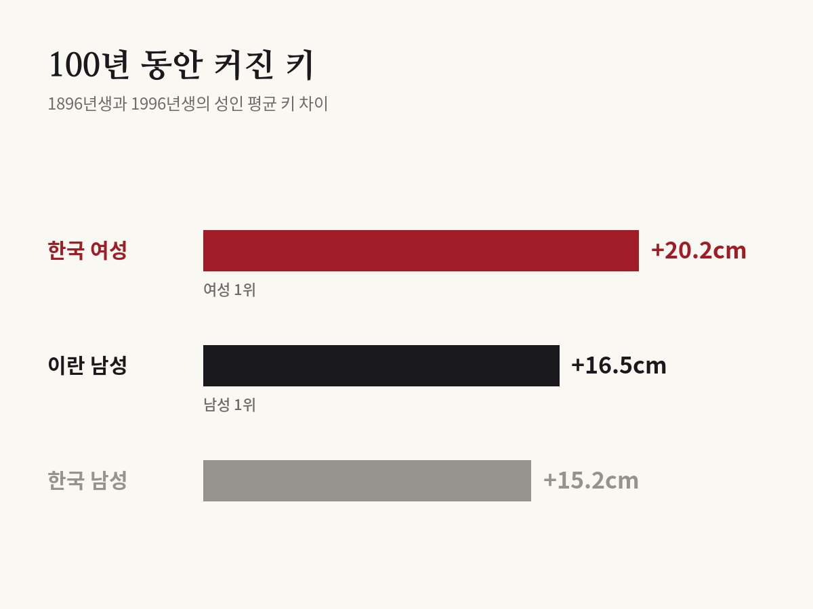

한국 여성 100년간 세계에서 가장 많이 컸다
NCD Risk Factor Collaboration · eLife, 2016

01결과
100년 전 태어난 한국 여성과 최근 태어난 한국 여성의 키를 비교하면 얼마나 차이가 날까요. 전 세계 연구자 800여 명이 모인 연구 모임이 이 질문에 답했어요.
1896년생과 1996년생의 성인 키를 비교했더니, 한국 여성은 평균 20.2cm 커졌어요. 조사한 200개 나라와 지역의 여성 가운데 가장 큰 증가폭이에요.
같은 기간 한국 남성은 15.2cm 커졌어요. 남성 중에서는 이란이 16.5cm로 가장 많이 컸어요.

02어떻게 조사했나
연구진은 1,472건의 조사 자료를 모았어요. 키를 잰 사람은 모두 1,860만 명이 넘어요.
본인이 '몇 cm'라고 말한 키는 빼고, 실제로 잰 키만 썼어요. 스스로 말한 키는 지역·나이·성별 등에 따라 일정하게 어긋나기 때문이에요.
그리고 태어난 해별로 18세 무렵의 평균 키를 추정해, 1896년생부터 1996년생까지 100년 동안의 변화를 그렸어요.
03세계는 어떻게 달라졌나
1996년생 기준으로 가장 키가 큰 남성은 네덜란드 남성으로, 평균 182.5cm였어요. 가장 키가 큰 여성은 라트비아 여성으로 평균 168cm를 넘었어요.
가장 작은 쪽은 동티모르 남성이 평균 160cm 안팎, 과테말라 여성이 평균 149cm 안팎이었어요. 가장 큰 나라와 가장 작은 나라의 차이는 남성이 22~23cm, 여성이 20cm 안팎이었어요.
모든 나라가 계속 큰 건 아니었어요. 미국처럼 일찍 키가 컸던 나라는 증가세가 멈추면서 순위가 내려갔어요. 사하라 이남 아프리카 일부 나라에서는 1960년대 이후 태어난 세대의 키가 오히려 줄기도 했어요.
04한국과 이웃 나라
한국 여성의 증가폭이 가장 컸던 데는 출발점이 낮았던 것도 있어요. 1896년생 한국 여성은 세계에서 다섯 번째로 키가 작았어요. 100년 뒤 1996년생은 키가 큰 쪽 3분의 1 안에 들어갔어요.
한국은 이 100년 동안 순위가 크게 오른 나라예요. 지금 한국 남녀는 일본 남녀보다 평균 키가 커요.
다만 한국 남성의 키는 1980년대에 태어난 세대부터 증가세가 평평해지기 시작했어요. 계속 커지기만 하는 건 아니라는 뜻이에요.
05아이들 키는 어떨까
같은 연구 모임은 2020년 학술지 《랜싯》에 어린이와 청소년의 키 변화도 발표했어요. 1985년부터 2019년까지 193개 나라의 5~19세 약 6,500만 명 자료를 모았어요.
이 35년 동안 평균 키가 가장 많이 큰 나라에는 한국과 중국 같은 신흥 경제국이 들어갔어요. 성인 키에서 보인 한국의 변화가 아이들 세대에서도 이어진 거예요.
연구진은 같은 나이 아이들의 키 차이가 나라마다 크게 벌어진다는 점도 보여 줬어요. 학교에 다니는 나이의 영양과 환경이 어른이 된 뒤의 키에 큰 영향을 줄 수 있다는 거예요.
06왜 이렇게 컸을까
이 논문은 나라별 키 변화의 원인을 따로 분석하지 않았어요. 다만 키는 유전만으로 정해지지 않아요. 어린 시절과 엄마 배 속에 있을 때의 영양, 질병, 위생, 생활 환경이 큰 영향을 준다고 알려져 있어요.
그래서 한 나라 사람들의 평균 키는 그 나라가 아이들을 얼마나 잘 먹이고 돌봤는지를 보여 주는 지표로 쓰이기도 해요. 한국 여성의 큰 변화는 100년 동안 생활 여건이 크게 달라진 것과 함께 읽을 수 있어요.
연구진은 키가 건강과도 이어진다고 설명해요. 관련 연구들을 바탕으로, 평균 키가 약 20cm 큰 나라는 작은 나라보다 심혈관 질환으로 숨질 위험이 17% 낮고 여러 부위의 암 위험은 20~40% 높을 수 있다고 추산했어요. 키는 그 자체로 좋고 나쁨을 따지기보다 어린 시절 영양과 환경을 비추는 거울로 읽을 수 있어요.
07읽을 때 주의할 점
같은 사람들을 100년 동안 따라간 연구가 아니에요. 1896년생과 1996년생이라는 서로 다른 세대의 18세 무렵 키를 비교한 거예요.
100년 전 자료는 지금보다 훨씬 적어서, 오래된 세대의 키는 통계 모형으로 추정한 값이에요. 숫자에는 어느 정도 오차가 있어요.
평균 키 이야기예요. 한 사람 한 사람의 키는 이 평균과 얼마든지 다를 수 있어요.
바로잡습니다
- 2020년 랜싯 후속 연구의 자료 범위를 '200개 나라와 지역'에서 '193개 나라'로 바로잡았습니다.
- 자기가 말한 키를 뺀 이유를 '사람들이 키를 크게 말해서'에서 논문 설명대로 '지역·나이·성별 등에 따라 일정하게 어긋나서'로 고쳤습니다. 키와 심장병·암 위험의 관계를 '조금 낮고 조금 높다'에서 논문 추산치(심혈관 사망 위험 17% 낮음, 일부 암 위험 20~40% 높음)로 고쳤습니다.